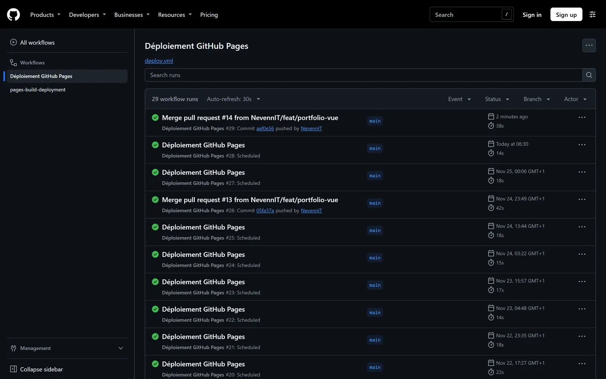
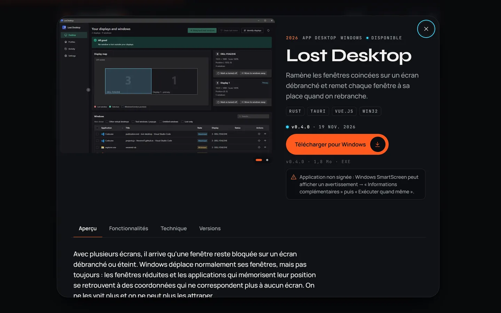
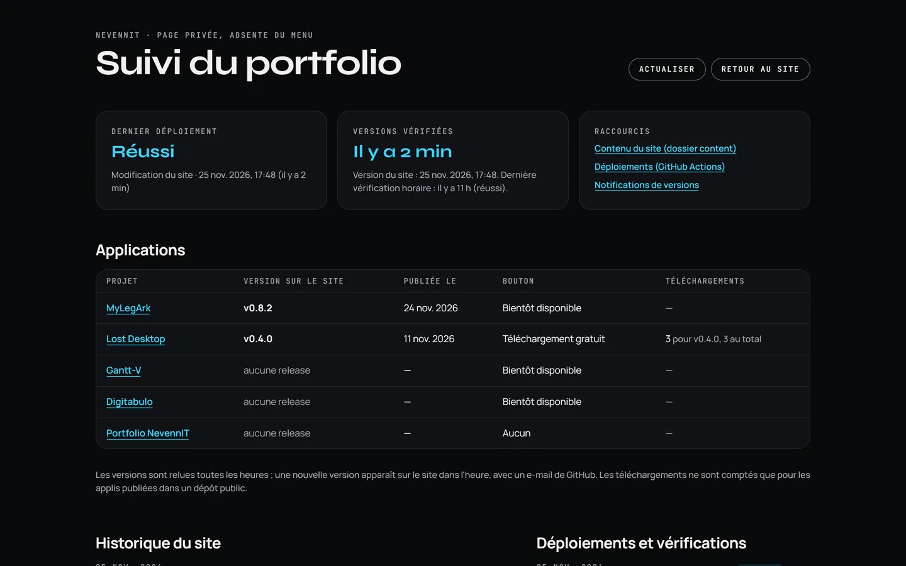
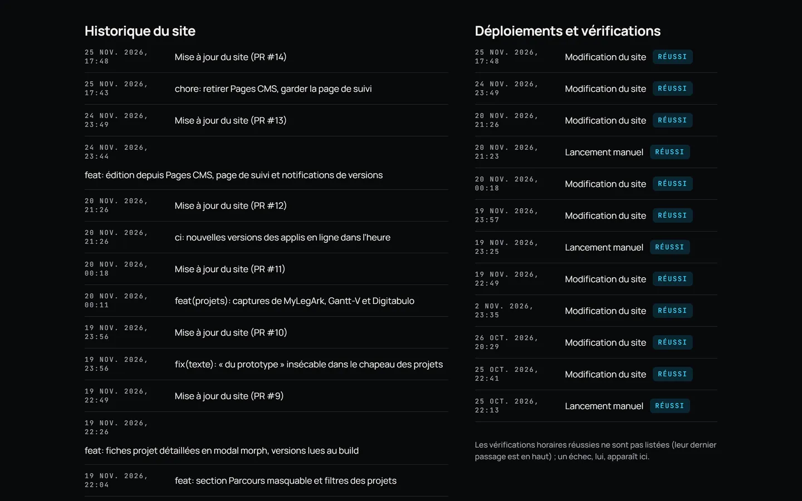

Ajouter un projet, changer une image ou un texte, sortir une nouvelle version d'une application et suivre que tout est bien en ligne. Pas à pas, sans jargon.
Le site se met à jour tout seul. Tu ne fais que modifier des fichiers et les envoyer sur GitHub.
content/ dans VS Code.main.Si le site n'a pas changé après 2 minutes : actualise la page avec Ctrl + F5 (le navigateur garde parfois l'ancienne en mémoire).
Tu n'as rien à faire côté portfolio : la version ne se saisit jamais à la main.
À la main (dossier content/) | Automatique |
|---|---|
| Les projets : nom, phrase, type, statut, technos, captures, bouton de téléchargement | Version affichée, date et notes de version (lues dans tes releases) |
| Les fiches détaillées : aperçu, fonctionnalités, technique, historique, vidéos | Conversion des captures PNG/JPG en WebP léger |
| Le parcours, l'e-mail, les phrases d'accueil | Déploiement du site, e-mails de nouvelle version, page de suivi |
Chaque texte s'écrit deux fois : "fr": "…" et "en": "…". Si tu laisses l'anglais vide, le français s'affiche aussi pour les visiteurs anglophones. Tu peux demander à Claude de traduire.
À faire à chaque fois que tu t'y mets, avant de modifier quoi que ce soit.
C:\Users\Daniel\.dev\NevennIT.github.io.main. En bas à gauche de VS Code s'affiche le nom de la branche. S'il n'indique pas main, clique dessus et choisis main dans la liste.
C'est la branche main qui est publiée. Claude travaille parfois sur une autre branche (feat/portfolio-vue) : tes modifications faites là-dessus n'arriveraient pas en ligne.
npm run devPuis Ctrl + clic sur l'adresse affichée (en général
http://localhost:5173). La page s'actualise toute seule à chaque fois que tu enregistres un fichier (Ctrl + S). Pour arrêter : Ctrl + C dans le terminal.Si npm run dev affiche une erreur « Cannot find package », tape d'abord npm install (installe les outils du site), puis relance.
Une fois que ce que tu vois en local te convient, tu l'envoies sur GitHub. Deux clics.
Ajout du projet Mon AppliNouvelles captures de DigitabuloCorrection d'une faute dans l'accueil
Un projet = un fichier dans content/projects/. Le plus simple est de copier un projet existant et de le modifier.
content/projects/, clic droit sur digitabulo.json → Copier, puis clic droit sur le dossier → Coller. Renomme la copie avec l'identifiant de ton projet : mon-appli.json (minuscules, chiffres et tirets, sans accent ni espace)."…" et les virgules en fin de ligne : c'est l'erreur la plus fréquente.public/projects/ (chapitre 5).npm run dev) : la carte apparaît dans la grille. Puis publie (chapitre 3).{
"id": "mon-appli", ← le même que le nom du fichier
"order": 35, ← place dans la grille (10, 20, 30…)
"title": "Mon Appli",
"year": "2027",
"type": "desktop", ← desktop, web ou addin
"status": "in-progress", ← available, in-progress ou archived
"feature": false, ← true = grande carte en tête (un seul projet)
"description": {
"fr": "Une ou deux phrases pour la carte.",
"en": "One or two sentences for the card."
},
"tags": ["Rust", "Tauri", "Vue.js"],
"images": ["/projects/mon-appli-1.png", "/projects/mon-appli-2.png"],
"repo": "NevennIT/mon-appli", ← dépôt GitHub : la version y est lue
"publicRepo": false, ← true seulement si le code est public
"download": { "mode": "soon" } ← voir le tableau
}
| Champ | Ce qu'il fait |
|---|---|
order | Plus petit = plus haut. Pour glisser un projet entre le 30 et le 40, mets 35. |
status | in-progress ajoute le badge animé « en cours ». Sert aussi au filtre « Statut ». |
download | Le bouton de la fiche : none (aucun), soon (« Bientôt disponible »), buy + "buy": "https://…" (lien d'achat), free (téléchargement gratuit, chapitre 8). |
Même principe dans content/fiches/ : copie une fiche, renomme-la mon-appli.json (le même nom que le projet) et remplace les textes. Sans fiche, la fenêtre s'ouvre quand même, avec seulement les captures et la phrase de la carte. Les onglets se créent tout seuls : Fonctionnalités n'apparaît que si la liste features n'est pas vide, Versions que s'il existe au moins une release. Astuce : tu peux demander à Claude de préparer la fiche complète (en français et en anglais) à partir du dépôt de l'appli, puis la relire.
Les images des cartes et des fiches sont dans public/projects/.
public/projects/ avec un nom simple : mon-appli-1.png, mon-appli-2.png…images : "/projects/mon-appli-1.png". Plusieurs images = un carrousel qui défile tout seul.Dans le terminal : npm run images. Les PNG/JPG de public/projects/ deviennent des .webp, les références dans content/ sont corrigées, et les originaux sont supprimés. Pratique pour garder le dépôt léger.
Utilise les modes « démo » de tes applis (coffre « Famille Exemple » de MyLegArk, ?demo de Digitabulo…). Pour Gantt-V, jamais de nom d'entreprise, de ligne de production ou de code article réels : les exemples fournis dans son dépôt en contiennent.
Le plus simple : garde le même nom de fichier (mylegark-1.webp) et remplace-le. Rien d'autre à changer.

images, puis les médias de la fiche · 2 le bouton choisi par download · 3 les onglets, remplis par content/fiches/<projet>.json.Les vidéos s'affichent dans le diaporama de la fiche, après les captures. Elles se déclarent dans la liste media du fichier content/fiches/<projet>.json.
Mets la vidéo en ligne sur YouTube (« non répertoriée » si tu veux qu'elle ne soit visible que via le portfolio). Son identifiant est la fin de l'adresse : youtube.com/watch?v=dQw4w9WgXcQ.
"media": [ { "type": "youtube", "id": "dQw4w9WgXcQ", "caption": { "fr": "Démonstration en 2 minutes", "en": "2-minute demo" } } ]
Pour Vimeo, même chose avec "type": "vimeo". La vidéo ne se charge qu'au clic du visiteur.
Dépose le fichier MP4 dans public/projects/videos/, puis :
{
"type": "video",
"video": "/projects/videos/mon-appli-demo.mp4",
"poster": "/projects/mon-appli-1.webp", ← image affichée avant la lecture (facultatif)
"caption": { "fr": "Restaurer une disposition", "en": "Restoring a layout" }
}
GitHub refuse les fichiers de plus de 100 Mo et le site devient lent au-delà de quelques dizaines de Mo : au-delà de 20 Mo, préfère YouTube.
{ "type": "image", "image": "/projects/ancienne-version.webp", "caption": { "fr": "La version de 2021", "en": "The 2021 version" } }
Plusieurs médias : sépare-les par une virgule entre les accolades }, {.
Deux fichiers : content/site.json pour les textes d'accueil et le contact, content/parcours.json pour la section Parcours.
content/site.json| Champ | Où il apparaît |
|---|---|
email | Contact et pied de page |
formEndpoint | Adresse Formspree du formulaire de contact (vide = formulaire désactivé) |
texts.heroTagline | La phrase sous « NevennIT » en haut de la page |
texts.projectsTitle / projectsLead | Titre et chapeau de la section Projets |
texts.parcoursTitle / parcoursLead | Titre et chapeau de la section Parcours |
texts.contactTitle / contactLead | Titre et chapeau de la section Contact |
content/parcours.json"todo": true, affichées en pointillés bleus en local) par tes expériences, la plus récente en premier. Mets "todo": false une fois l'entrée réelle.education) et compétences (skills, par familles) : même principe."visible": false à "visible": true en haut du fichier, puis publie. Tant que c'est false, la section n'apparaît qu'en local.{
"todo": false,
"period": { "fr": "2022 — aujourd’hui", "en": "2022 — present" },
"role": { "fr": "Intitulé du poste", "en": "Job title" },
"org": "Entreprise",
"place": { "fr": "Ville", "en": "City" },
"text": { "fr": "Deux lignes sur les missions.", "en": "Two lines about the job." },
"tags": ["VBA", "Excel"]
}
La checklist à suivre quand une application passe en v0.9.0, v1.0.0… Le portfolio suit tout seul.
vX.Y.Z (ex. v0.9.0), et plus grand que le précédent.## Titre, - élément de liste, **gras**.lost-desktop, tout est fusionné sur main.git tag v0.5.0 git push origin v0.5.0
lost-desktop-releases.Sur GitHub, dépôt NevennIT.github.io → onglet Actions → Déploiement GitHub Pages → bouton Run workflow → Run workflow. Ou dans le terminal : gh workflow run deploy.yml -R NevennIT/NevennIT.github.io.
Le code de tes applis est privé : les visiteurs ne peuvent pas télécharger depuis ces dépôts. Pour Lost Desktop, un dépôt public ne contient que les installateurs (lost-desktop-releases). Pour faire pareil avec une autre appli, demande à Claude : « rends MyLegArk téléchargeable comme Lost Desktop ». Il créera le dépôt public, la copie automatique, et passera le bouton du projet en "mode": "free".
nevennit.github.io/#/suivi — absente du menu, à garder en favori. Elle ne montre que des informations déjà publiques.

content sur GitHub, la liste des déploiements, et l'historique des e-mails « nouvelle version ».
À chaque nouvelle version en ligne, le portfolio ouvre puis referme un « ticket » dans son dépôt : c'est ce qui déclenche l'e-mail de GitHub. Pour le recevoir, une seule fois : sur la page du dépôt, bouton Watch → All Activity, et vérifie dans GitHub → Settings → Notifications que l'envoi par e-mail est coché.
Les situations les plus probables, et quoi faire. En cas de doute, Claude peut lire les journaux et corriger.
| Ce que tu vois | Cause probable | Que faire |
|---|---|---|
| E-mail « Run failed », ou « Échec » sur la page de suivi | Souvent une virgule ou un guillemet en trop/en moins dans un fichier content/…json | Dans VS Code, lance npm run build : l'erreur indique le fichier et la ligne. Corrige, puis publie de nouveau. Le site en ligne, lui, reste sur la version d'avant tant que l'erreur n'est pas corrigée. |
| Ma modification n'apparaît pas | Cache du navigateur, ou modification pas envoyée | Ctrl + F5. Vérifie dans l'historique de la page de suivi que ton message y est ; sinon, as-tu bien cliqué « Synchroniser » ? Étais-tu sur main ? |
| La nouvelle version n'apparaît pas après plusieurs heures | Release encore en brouillon, vérification retardée, ou jeton expiré | 1. Vérifie que la release est publiée (pas draft). 2. Force avec Run workflow (chapitre 8). 3. Si ça ne suffit pas : le jeton RELEASES_TOKEN a peut-être expiré (voir ci-dessous). |
| Plus aucune vérification horaire dans GitHub Actions | GitHub met en pause les tâches programmées d'un dépôt public après 60 jours sans activité (il prévient par e-mail) | Onglet Actions → Déploiement GitHub Pages → bouton Enable workflow. Ou publie n'importe quelle petite modification. |
| Pas d'e-mail de nouvelle version | Le dépôt n'est pas suivi | Watch → All Activity sur le dépôt (chapitre 9). |
| Une modification ne me plaît pas | — | Demande à Claude de l'annuler, ou corrige le fichier et publie de nouveau. Rien n'est jamais perdu : GitHub garde tout l'historique. |
RELEASES_TOKEN (environ une fois par an)Le portfolio lit les versions de tes dépôts privés grâce à un jeton GitHub, valable le temps que tu as choisi à sa création (GitHub prévient par e-mail avant l'expiration).
portfolio-releases → Regenerate token (ou créer un nouveau jeton : accès Contents : Read-only sur les dépôts des applis).NevennIT.github.io → Settings → Secrets and variables → Actions → RELEASES_TOKEN → Update → colle → Update secret.Même chose pour PUBLIC_RELEASES_TOKEN dans le dépôt lost-desktop (accès Contents : Read and write sur lost-desktop-releases).
| Quoi | Fichier |
|---|---|
| Un projet (carte) | content/projects/<id>.json |
| Sa fiche détaillée | content/fiches/<id>.json |
| Captures | public/projects/ |
| Vidéos (≤ 20 Mo) | public/projects/videos/ |
| Parcours | content/parcours.json |
| E-mail, accueil | content/site.json |
| Autres textes FR/EN | src/i18n/messages/ |
type | desktop · web · addin |
status | available · in-progress · archived |
download.mode | none · soon · buy · free |
media.type | image · video · youtube · vimeo |
npm run dev | Voir le site en local |
npm run build | Vérifier qu'il n'y a pas d'erreur |
npm run images | Convertir les captures en WebP |
npm run guide | Regénérer ce PDF |
npm install | Réinstaller les outils (si erreur) |
main + synchroniser| Le site | nevennit.github.io |
| Page de suivi | nevennit.github.io/#/suivi |
| Déploiements | github.com/NevennIT/NevennIT.github.io/actions |
| Téléchargements publics | github.com/NevennIT/lost-desktop-releases |